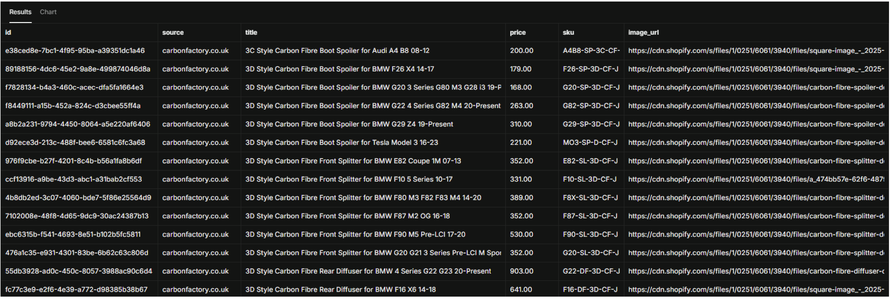

PRAKSISPROSJEKT · IS-302
Statusrapport 2
En oversikt over fremdriften i utviklingen av nettbutikken til Smaragd Motorsport, med fokus på arbeidsoppgaver, teknisk utvikling, utfordringer og videre arbeid.
Sist oppdatert: 15.10.2026
Prosjektstatus
Siden statusrapport 1 har vi jobbet videre med utviklingen av nettbutikken til Smaragd Motorsport. Vi har gått fra den innledende planleggingsfasen til å arbeide mer konkret med den tekniske løsningen. Arbeidet har blant annet omfattet produktdata, Supabase-databasen og videreutvikling av frontend.
Vi har fortsatt dialogen med Smaragd Motorsport for å få en bedre forståelse av bedriftens behov og forventninger. Samtidig har vi jobbet med å utvikle de ulike delene av løsningen og finne ut hvordan de skal fungere sammen. Dette har gitt oss bedre oversikt over hva som gjenstår før nettbutikken kan bli en helhetlig og funksjonell løsning.
Arbeidsoppgaver og ansvarsfordeling
Gruppemedlemmene har ulike hovedansvarsområder i prosjektet. Dennis har ansvar for frontend, Noa arbeider med administrasjonssystemet, Marius har ansvar for backend og ordrebehandling, Mohammed arbeider med prisberegning og valuta, og Kaan har ansvar for produktdata, leverandørintegrasjoner, testing og integrasjonssikkerhet.
Selv om vi har fordelt ansvarsområdene, samarbeider vi på tvers av gruppen for å sikre at de ulike delene av løsningen fungerer sammen. En mer detaljert oversikt over hvert gruppemedlems arbeidsoppgaver og fremdrift finnes i prosjektdagboken.
Produktdata og database
Arbeidet med produktdata har vært en viktig del av utviklingen. Vi bruker Supabase til å lagre produktinformasjon som skal brukes i nettbutikken. Målet er å organisere produktene på en strukturert måte, slik at informasjonen kan hentes frem og presenteres for brukerne.
Kaan har spesielt arbeidet med hvordan produktdata fra leverandørene skal struktureres, importeres og lagres. Dette omfatter blant annet håndtering av produktnavn, SKU, priser, produktlenker og bilder der dette er tilgjengelig. Arbeidet er viktig for at produktene skal kunne vises korrekt, og for at funksjoner som søk og filtrering skal kunne utvikles videre.
Frontend og brukergrensesnitt
Vi har også jobbet videre med frontend og utformingen av nettbutikken. Målet er å lage en oversiktlig og brukervennlig løsning der kundene enkelt kan navigere på nettsiden og finne relevante produkter.
Arbeidet med frontend skal etter hvert kobles tettere sammen med produktdataene i databasen. På denne måten kan informasjonen som lagres i systemet, presenteres på en forståelig måte for brukerne.
Utfordringer og erfaringer
En av utfordringene vi har møtt, er at produktdataene fra leverandørene ikke alltid er komplette. Enkelte produkter mangler blant annet beskrivelser, merke, kategori eller bilder. Dette kan påvirke hvordan produktene vises på nettsiden, og gjøre det vanskeligere å utvikle god søke- og filtreringsfunksjonalitet.
Vi har også fått beskjed om at én av leverandørene er byttet ut. Dette betyr at vi må vurdere hvordan den nye leverandørens produktdata skal håndteres, og hvordan endringen påvirker databasen og informasjonen som allerede er lagret.
Gjennom arbeidet har vi fått en bedre forståelse av hvor viktig det er med god datakvalitet og pålitelige leverandørintegrasjoner. Det er ikke nok å importere et stort antall produkter; informasjonen må også være korrekt, strukturert og egnet til videre bruk i nettbutikken.
Videre arbeid
Fremover vil vi fortsette å utvikle frontend og koblingen mellom nettsiden og databasen. Vi skal også arbeide videre med produktimport, kvalitetssikring av data og håndtering av manglende informasjon.
Videre vil vi teste funksjonaliteten som utvikles, og fortsette dialogen med Smaragd Motorsport for å avklare behov og eventuelle endringer. Målet er å få på plass en sammenhengende løsning der produktdata, brukergrensesnitt, prisberegning og øvrige funksjoner fungerer godt sammen.
Vi vil også fortsette å samarbeide på tvers av ansvarsområdene, slik at utviklingen av de enkelte delene bidrar til en helhetlig nettbutikk som dekker bedriftens behov.
Skjermbilder


